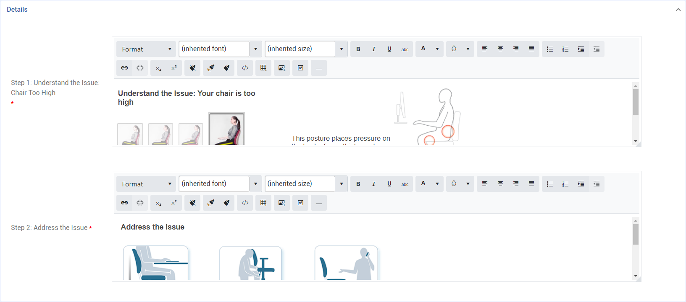

The Office Ergonomics module is supported by several look-up tables:
RiskInventory
RiskInventoryCategory
RiskProfile
RiskRecommendation
RiskType
RiskTypeOverall
Some of these (RiskInventory, RiskProfile, and RiskType) are accessible from the Ergonomics cloud menu for convenience.
Setting Up Risk Inventories
Risk inventories are the individual elements that are evaluated. A risk inventory has multiple possible responses, each with a value and multiplier to generate a risk score.
Open the RiskInventory look-up table, or choose Risk Inventory Configuration in the Ergonomics cloud menu.
Enter a Code and Description. The Definition field may be used to capture a more detailed description.
To allow a GX2 user to change the value for this risk inventory on the "Manage Employee Risk" page, select the Resolvable checkbox. If this is not selected, the risk inventory value selected by the employee will be read-only. For example, this is commonly used for evaluations of stress; only the employee can attest to their stress level.
Some risk inventories are “just part of the job”; they can’t be changed but would still contribute to the overall risk score. For these, select the Count as Fact checkbox. A user will still have the option to select "I have read the recommendations" from My Tasks in myCority, but a value is not required to be selected to “resolve” the issue.
Select the Risk Inventory Category; this is simply to group the inventories into logical groupings on the Manage Employee Risk page.
Select the Risk Inventory Image that will be presented in the self-assessment.
In the Risk Inventory Value section, create all the values that can be selected by the employee (or in the Manage Employee Risk page, if flagged as Resolvable. Use the arrows to change the order of appearance. See “Configuring Values” below for more information.
Add the risk inventory to the appropriate risk profiles and risk types (see “Setting Up Risk Profiles” and “Setting Up Risk Types" below). The Risk Profiles and Risk Types tabs display which profiles and types the risk inventory has been added to.
Configuring Values
For each value:
Enter an Employee Description (e.g. a layperson definition) that employees will see in myCority.
Select the appropriate checkbox(es):
Not Applicable – the value that this inventory will be set to when it does not apply to an employee, typically due to a relationship with another value (see below). This value can never be selected manually from the "Manage Employee Risk" page.
Resolves – the neutral state/desired value, has no risk associated with it
Re-initializes – the value that will be set if a N/A relationship no longer applies (see below)
Awaiting Info – the value that is set when more information is needed about a risk inventory for an employee
Default – the value that this inventory will default to when there has been no previous entry
Select the color of the Icon to be displayed when the value is selected (Red, Yellow, Green, or None).
Optionally, enter the value’s Ranking. This is used in conjunction with other values to identify if the issue got better or worse.
The Risk Equation Value and Risk Multiplier are used to calculate the risk score.
Use the Issue Resolution Config tab to configure the issue resolution content that employees will see in myCority.

Use the Risk Inventory Relationships tab to build relationships between risk inventories. Any risk inventory value added to this list will be set to Not Applicable when the current Risk Inventory Value is selected. See below for more detail.
Use the Translation tab to translate the value’s Description; use the Issue Resolution Translation tab to translate the content on the Issue Resolution Config tab.
Setting Up Relationships with Other Inventories
There may be some risk inventories that should be considered not applicable if a particular risk inventory value is selected. For example, if the employee selects “Never Experiences Discomfort” in the Frequency of Discomfort risk inventory, then inventories for specific types of discomfort (e.g. lower back discomfort, shoulder discomfort, etc.) are not relevant.
To set this up, in the Values section, click the value that you want to base the relationship on (e.g. Never Experiences Discomfort). On the Risk Inventory Relationships tab, identify all inventories that should be set to N/A if the initial inventory value is selected. In our example we’ll add the other discomfort inventories (lower back discomfort, shoulder discomfort, etc.).
In the Values section for each of these other inventories, identify the Re-Initializes value, i.e. the one that should be selected if the relationship no longer applies. For example, if the Frequency of Discomfort is changed to “Infrequent Work-Related Discomfort”, then in the Shoulder Discomfort inventory you may want to specify a specific value to be set, or it could be set to “Information Not Available But Needed” to alert the employee or GX2 admin that a response is now required for that inventory.
Setting Up Risk Profiles
A risk profile is used to determine which risk factors are assigned to a worker. Generally, you will only have one or two risk profiles for Office Ergonomics (e.g. Office Ergonomics, Office Ergonomics Working from Home, etc.).
Open the RiskProfile look-up table, or choose Risk Profiles in the Ergonomics cloud menu.
On the Risk Inventory tab, select all of the risk inventories that are applicable to this profile.
A risk profile is associated to one or more employee group/team. (Use the GroupAndTeam look-up table to select the employees who are part of that group/team.) On the profile’s Groups and Teams tab, select the group(s) who should be assigned this profile. Risk profiles may also be assigned using Linked Queries (also on the GroupandTeam table).
Capture any Incompatible Risk Profiles: profiles added to this sublist cannot be assigned to an employee while the current profile is assigned. For example: an employee has profile A assigned. Profile A is incompatible with Profile B. The employee cannot have Profile B assigned to them until Profile A has been removed.
Setting Up Risk Types
Open the RiskType look-up table, or choose Risk Type Configuration in the Ergonomics cloud menu.
Indicate if this risk type Does Not Contribute to Overall Risk. For example, you may choose not to include Discomfort in the metrics for wellness.
Select the Expose on My Ergo Dashboard checkbox to have this risk type appear in the Personal Risk section of myCority. If this checkbox is not selected, the data will be collected (e.g. as a baseline) but not reported.
If you want employees to be able to view and change any of their risk inventory values in myCority, select the Discomfort checkbox. If not selected, the "Update Discomfort" link will take the employee to their My Tasks page filtered to ergonomic issues.
For each Risk Range value, select the Risk Color that will display for this risk type on the Manage Employee Risk page in GX2 and in myCority.
On the Risk Inventories tab, select all of the risk inventories that are applicable to this type.